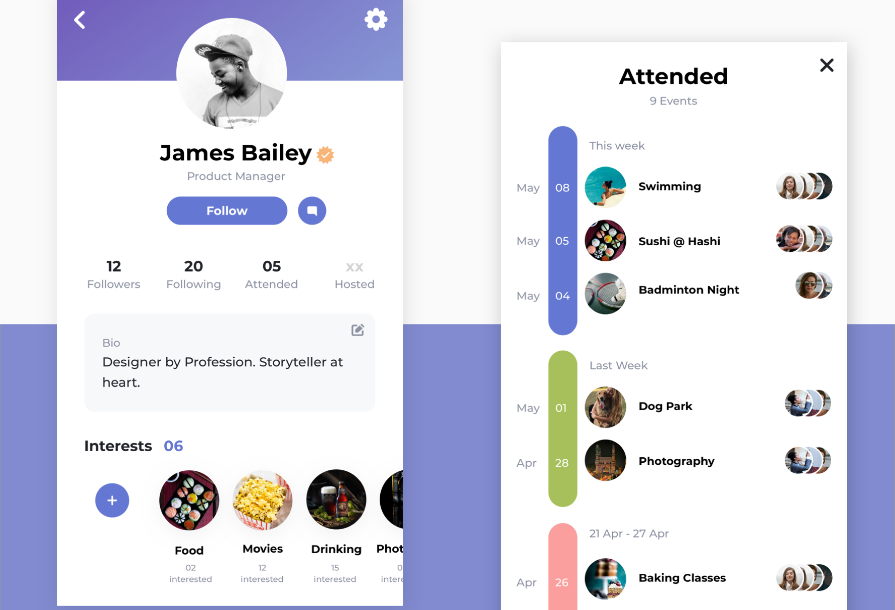
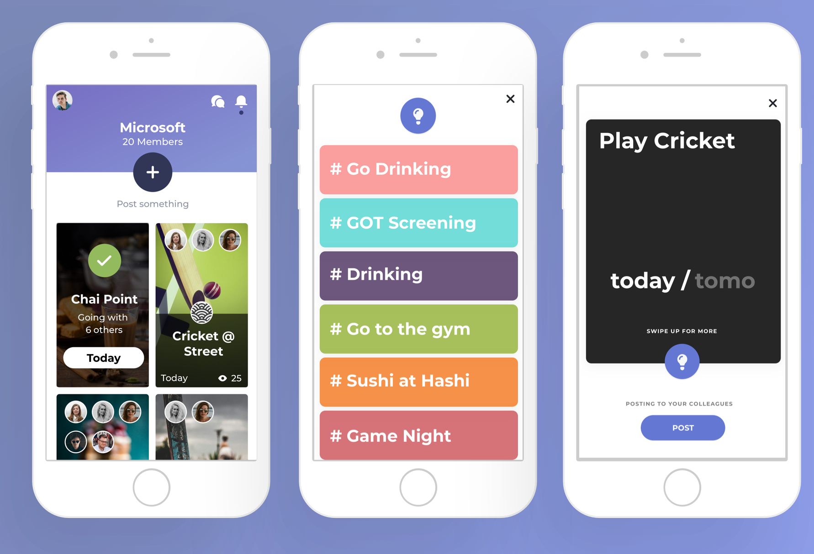
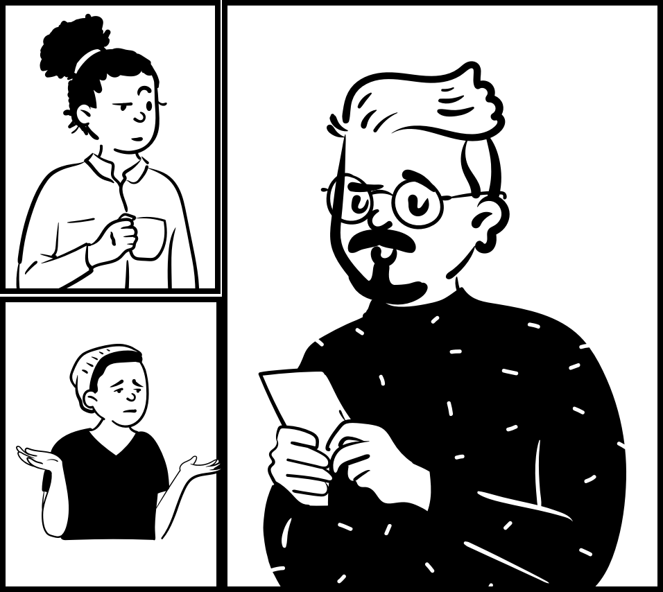
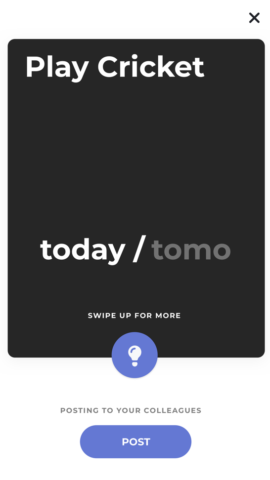
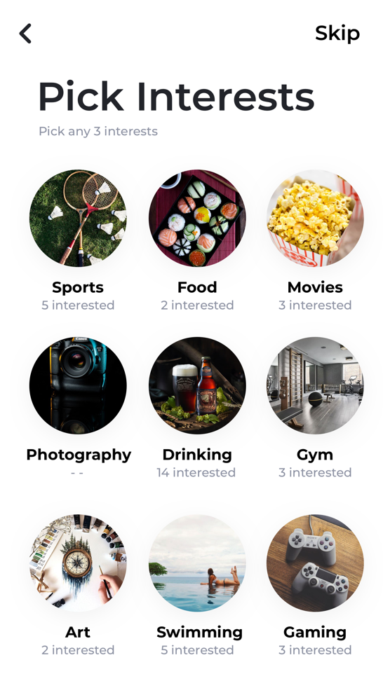

<div class="load-data">
  <div class="popup-main-content">
    <div class="container dott">
      <div class="row">
        <div class="col-md-12">
          <div class="portfolio-details-title">
            <h2 class="d-flex align-items-center justify-content-center">
              <div style="width: 120px;" class=" mr-3">
                
              </div>
              <div class="d-flex flex-column align-items-center mb-4">
                <span style="font-size: 60px">
                  &ldquo;Dott&rdquo;
                </span>
                <h4 class="text-uppercase">
                  do things together
                </h4>
              </div>
            </h2>
          </div>
          <!-- /portfolio-details-title -->
        </div>
        <div class="col-lg-6">
          <div class="portfolio-details-info">
            <div class="tags"><span>DOTT </span> </div>
            <div class="tags"><span>CLIENT: </span> TINMEN</div>
            <div class="tags"><span>PROJECT: </span> SOCIAL PLATFORM</div>
            <div class="tags"><span>YEAR: </span> 2019</div>
          </div>
          <!-- /portfolio-info -->

        </div>
        <!-- /portfolio-description -->
        <div class="col-lg-6 mt-40 mt-lg-0">
          <p class="portfolio-description">Dott is a platform that enables you to socialize with your co-works
            beyond
            the whole worklife.</p>
          <p class="portfolio-description mt-30">
            It Helps you network across your office space, build collaborations, and maybe, just maybe, you’ll find your
            office
            tribe. </p>
        </div>
        <!-- /portfolio-description -->
        <div class="col-md-12 mt-80">
          <div class="owl-carousel dott-carousel">
            
            
            
              
          </div>
        </div>

        <!-- story boarding -->
        <div class="col-lg-12 mt-80">
          <h2 class="section-heading"><span>2/</span>Story</h2>
          <h6 class="mb-30 mt-10 text-white">STORY BOARDING &ldquo;zindagi ki sachchi ghatna&rdquo;</h6>

        </div>
        <div class="col-lg-6">
          
        </div>
        <div class="col-lg-6 mt-20 mt-lg-0 d-flex dott-description-text">
          <p><strong>MAU:</strong> Yo, Who’s the new guy in our team Snig?</p>
          <p><strong>SNIG:</strong> Mujhe Nahi pata bro! He’s from the Design team at Block 1
            I guess.</p>
          <p><strong>MAU:</strong> You think he’d be interested in gamenights? Ask Him na! </p>
          <p><strong>SNIG:</strong> Crazy or what?! He just became a part of the team.
          </p>
          <p><strong>MAU:</strong> He’s here till the end of next month. Dekhte hai! </p>
          <p><strong>SNIG:</strong> Wanna go have some coffee? </p>
          <p><strong>MAU:</strong> Chalo.</p>
        </div>

        <!--  problem -->
        <div class="col-lg-12 mt-80">
          <h2 class="section-heading"><span>3/</span>Problem</h2>
          <h6 class="text-uppercase text-white mb-30 mt-10">why we dont socialize at work</h6>
          <p class="dott-problem-tags">
            <span>Awkward conversations</span>
            <span>Cause i see them everyday</span>
            <span>Don't know what to do</span>
            <span>Hierarchy creates barriers</span>
            <span>Different interests</span>
            <span>Shy to talk to new people</span>
            <span>I'm an introvert</span>
            <span>We always go out drinking</span>
          </p>
        </div>

        <!-- data analysis -->
        <div class="col-lg-12 mt-80">
          <h2 class="section-heading"><span>4/</span>Data Analysis</h2>
          <h6 class="text-uppercase text-white mb-30 mt-10">i bugged around 30 people fot this info</h6>
          
        </div>

        <!-- screens -->

        <div class="col-md-12 mt-80">
          <h2 class="section-heading"><span>5/</span>Screens</h2>
          <h6 class="text-uppercase text-white mb-30 mt-10">i bugged around 30 people fot this info</h6>
        </div>


        <div class="row mr-0 ml-0 ">
          <div class="col-md-6 d-flex align-items-center mt-30">
            <div class="row">
              
            
            </div>
          </div>
          <div class="col-md-6 mt-30 dott-description-text">
            <p class="mb-20">
              <strong>Observation 01:</strong> People often run out of things to do.
            </p>
            <p class="mb-20">
              <strong>Thought Process:</strong> I checked a couple of forum/chat based platforms that indulge in group outings. I’m an
              extrovert so
              I love inviting people over and having parties. All we do is chill at home but having more things to do
              would be
              fun.
            </p>
            <p class="mb-20">
              <strong>Conclusion:</strong> Knowing what is available around is a great way in engaging.Hence, I added a little idea
              button that
              pops up things you can do nearby and the avg. time it takes.
            </p>
          </div>
        </div>
        <div class="row mr-0 ml-0 flex-md-row flex-column-reverse">
          <div class="col-md-6 mt-60 dott-description-text">
            <p class="mb-20">
              <strong>Observation 02:</strong> People really dont know who their coworkers are in real life.
            </p>
            <p class="mb-20">
              <strong>Thought Process:</strong> At work people can be completely different. I conducted an excersise within my team
              memebers that
              each one would present a personal slide show of their interests and who they are this was a once every
              week event.
            </p>
            <p class="mb-20">
              <strong>Conclusion:</strong> To my surprise such unknown talents I came to know of which, peeked my interest in getting to
              know the
              person better.
            </p>
          </div>
          <div class="col-md-6 d-flex align-items-center mt-60">
            <div class="row">
              
            
            </div>
            
          </div>
        </div>
        <div class="row mr-0 ml-0">
          <div class="col-md-6 d-flex align-items-center mt-60">
            <div class="row">
              
            
            </div>
          </div>
          <div class="col-md-6 mt-60 dott-description-text">
            <p class="mb-20">
              <strong>Observation 03:</strong> People often feel at ease when there is a friendly face in a bunch of people.
            </p>
            <p class="mb-20">
              <strong>Thought Process:</strong> This is very debatable. Cause I’m personally looking for new interesting people to
              interact with.
              But I have tons of office contacts added in my FB friend list that I hardly see/meet. It’d be great to
              know what
              they’ve been upto
            </p>
            <p class="mb-20">
              <strong>Conclusion:</strong> Known faces is a feature that I added to the whole adding friends experience. To see how many
              common
              events you have with that person.
            </p>
          </div>
        </div>

        <div class="col-md-12">
          <div class="portfolio-details-nav d-flex justify-content-between">
            <!-- <div>
              <a class="portfolio-link"
                href="portfolio-details-01.html">Previous Project</a>
            </div> -->
            <div>
              <a class="portfolio-link"
                href="portfolio-details-02.html">Next Project</a>
            </div>
          </div>
          <!-- /portfolio-details-nav -->
        </div>

      </div>
    </div>
  </div>
</div>